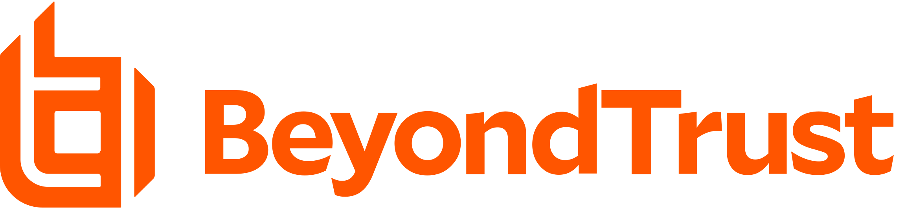

Ruth Victor
Ruth Victor
Privileged Access Management
What is Privileged Access Management?
Privileged Access Management (PAM) encompasses cybersecurity strategies and technologies designed to control elevated ("privileged") access and permissions for identities, users, accounts, processes, and systems within an IT environment. By appropriately tailoring privileged access controls, PAM aids organizations in reducing their attack surface, thereby mitigating the impact of external attacks and insider threats.
Among the many strategies within privilege management, a core objective is the implementation of least privilege, which involves limiting access rights and permissions for users, accounts, applications, systems, devices (including IoT), and computing processes to the minimum necessary for authorized activities. Referred to alternatively as privileged account management, privileged identity management (PIM), or simply privilege management, Privileged Access Management (PAM) is regarded by analysts and technologists as a crucial security initiative. It serves to mitigate cyber risk, fulfill compliance requirements, and yield substantial returns on security investments.
Privilege management operates within the broader framework of identity and access management
(IAM) and identity security. Together, PAM and IAM contribute to delivering fine-grained
control, visibility, and auditability over all credentials, privileges, and access.
While IAM controls ensure the authentication of identities, guaranteeing that the right user
has the right access at the right time, PAM adds an additional layer of granular visibility,
control, and auditing over privileged identities and session activities. PAM is a core
component of identity security, which analysts and IT leaders view as crucial for
safeguarding enterprise assets and users, particularly in a perimeterless,
work-from-anywhere (WFA) environment. The identity infrastructure itself, including IAM and
IGA toolsets, is increasingly targeted by cyber threats, highlighting the necessity for
robust PAM controls to protect it comprehensively.
This glossary post will cover
- What privilege refers to in a computing context
- Categories of privileges and privileged accounts/credentials
- Typical risks associated with privileges and avenues of threats
- Privileged access security best practices
- How to implement PAM
What Are Privileges and How Are They Created?
In information technology (IT), privilege refers to the authority granted to a specific account or process within a computing system or network. This authorization enables the account or process to override or bypass certain security restrictions, allowing actions like shutting down systems, loading device drivers, configuring networks or systems, provisioning and configuring accounts and cloud instances, and more.
In his book "Privileged Attack Vectors," industry thought leader Morey Haber provides a fundamental definition: "privilege is a special right or advantage. It entails an elevation above the normal and is not merely a setting or permission granted to the masses."
Privileges play a crucial role in operations by granting elevated rights to users, applications, and system processes, allowing them access to specific resources and facilitating work-related tasks. However, the potential for misuse or exploitation of privilege, whether by insiders or external attackers, poses a significant security challenge for organizations. Operating systems, file systems, applications, databases, hypervisors, cloud management platforms, and other components incorporate privileges for various user accounts and processes. Additionally, certain privileged users, such as system or network administrators, have the ability to assign privileges. Depending on the system, privilege assignment, or delegation, to individuals may be based on role-based attributes, such as business unit (e.g., marketing, HR, or IT), as well as various other parameters like seniority, time of day, or special circumstances.
What are Privileged Accounts?
A privileged account is defined as any account that offers access and privileges surpassing those of non-privileged accounts. Concurrently, a privileged user is someone currently utilizing privileged access, typically through a privileged account. Due to their heightened capabilities and access, privileged users and accounts present significantly greater risks compared to non-privileged counterparts. Superuser accounts, a special category of privileged accounts, are primarily utilized for administrative purposes by specialized IT personnel. These accounts grant virtually unrestricted power to execute commands and implement system modifications. Commonly referred to as "Root" in Unix/Linux and "Administrator" in Windows systems, superuser accounts enjoy broad access to files, directories, and resources with full read, write, and execute permissions. They possess the authority to enact systemic changes across a network, including file creation or installation, modification of files and settings, and user and data deletion. Moreover, superusers hold the capability to grant and revoke permissions for other users. If misused, whether inadvertently (e.g., accidental deletion of a critical file or erroneous command input) or maliciously, these highly privileged accounts can precipitate catastrophic damage throughout a system, or even across the entire enterprise.
In Windows systems, each computer typically includes at least one administrator account. The
Administrator account permits users to carry out activities like software installation and
adjustments to local configurations and settings.
macOS, conversely, adopts a Unix-like structure but is seldom deployed as a server compared
to Unix and Linux. Users on Mac endpoints may typically operate with root access by default.
However, adhering to macOS security best practices, it is recommended to establish and
utilize a non-privileged account for routine computing tasks, thereby reducing the potential
for and impact of privileged threats.
In a least privilege environment, the majority of users primarily operate with
non-privileged accounts 90-100% of the time. These non-privileged accounts, often referred
to as least privileged accounts (LUA), generally fall into two categories
- Standard user accounts: These accounts possess a restricted set of privileges, typically allowing activities such as internet browsing, accessing specific applications (e.g., MS Office), and limited resource access, often dictated by role-based access policies.
- Guest user accounts: These accounts have even fewer privileges than standard user accounts, usually limited to basic application usage and internet browsing.
What are Privileged Credentials?
Privileged credentials, also known as privileged passwords, constitute a subset of credentials that confer elevated access and permissions across various accounts, applications, and systems. These credentials can be associated with human users, applications, service accounts, and more. Among these, SSH keys represent a type of privileged credential widely used in enterprises to access servers and establish connections to highly sensitive assets. In some instances, particularly within DevOps environments, privileged credentials may be referred to as "secrets."
Privileged account passwords are often dubbed as "the keys to the IT kingdom" due to their capability, especially in the case of superuser passwords, to grant authenticated users nearly unrestricted privileged access rights across an organization's most critical systems and data. Given the significant power embedded within these privileges, they are susceptible to abuse by insiders and are highly sought after by hackers. According to Forrester Research, approximately 80% of security breaches involve the compromise of privileged credentials.
Types of Privileged Accounts
As a best practice, most non-IT users should only have access to standard user accounts. However, some IT employees may have multiple accounts. They may log in as standard users for routine tasks and switch to superuser accounts for administrative activities. Since administrative accounts carry more privileges and consequently pose a greater risk if misused or abused, it's recommended in Privileged Access Management (PAM) to use these accounts only when absolutely necessary and for the shortest duration possible.
Examples of privileged accounts typically in an organization
In recent times, privileged accounts are often linked to a machine identity rather than a human one. The rise of machine accounts, as seen in Robotic Process Automation (RPA) and other automated workflows, introduces considerable security complexity to IT environments. This underscores the critical role of Privileged Access Management (PAM) systems in managing these accounts effectively.
Privileged Risks & Privileged Threats – Why PAM is Needed
- Lack of visibility and awareness of privileged users, accounts, assets,
and credentials.
Long-forgotten privileged accounts are commonly spread across organizations. These orphaned accounts, which may number in the millions, present dangerous backdoors for attackers, including former employees who have left the company but still retain access. Additionally, many cloud identities and accounts are dynamic and ephemeral, yet carry extensive privileges. This increasingly blurs the distinction between unprivileged and privileged identities. A vague understanding of who possesses what access and how they utilize it leaves organizations vulnerable to undetected threats and attack paths.
- Over-provisioning of privileges.
If privileged access controls are overly restrictive, they can disrupt user workflows, causing frustration and hindering productivity. Since end users rarely complain about having too many privileges, IT admins traditionally grant broad sets of privileges. Additionally, an employee’s role often evolves, leading to the accumulation of new responsibilities and corresponding privileges, while still retaining privileges they no longer need.
This excess of privileges contributes to a bloated attack surface. Routine computing for employees on personal PCs might include internet browsing, streaming video, using MS Office and other basic applications, including SaaS tools (e.g., Salesforce.com, Google Docs, Slack). In the case of Windows PCs, users often log in with administrative account privileges, which are far broader than necessary. These excessive privileges significantly increase the risk of malware or hackers stealing passwords or installing malicious code via web surfing or email attachments. The malware or hacker could then exploit the full set of privileges of the account, accessing data on the infected computer and potentially launching attacks against other networked computers or servers.
- Shared accounts and passwords
IT teams commonly share root, Windows Administrator, and other privileged credentials for convenience, allowing workloads and duties to be seamlessly shared. However, when multiple people use the same account password, it becomes impossible to attribute actions performed with that account to a single individual. This practice creates significant security, auditability, and compliance issues.
- Hard-coded / embedded credentials
Privileged credentials are essential for facilitating authentication for app-to-app (A2A) and application-to-database (A2D) communications and access. Applications, systems, network devices, and IoT devices may be shipped or deployed with embedded, default credentials that are easily guessable and pose substantial risks. Additionally, employees often hardcode secrets in plain text—such as within a script, code, or file—making them easily accessible when needed.
- Manual and/or decentralized credential management
Privilege security controls are often immature. Privileged accounts and credentials may be managed differently across various organizational silos, resulting in inconsistent enforcement of best practices. Human privilege management processes cannot scale in most IT environments, where thousands—or even millions—of privileged accounts, credentials, and assets can exist. With so many systems and accounts to manage, humans invariably take shortcuts, such as re-using credentials across multiple accounts and assets. Consequently, one compromised account can jeopardize the security of other accounts sharing the same credentials.
- Lack of visibility into application and service account privileges
Applications and service accounts often automatically execute privileged processes to perform actions and communicate with other applications, services, resources, and more. These applications and service accounts frequently possess excessive privileged access rights by default and are prone to other serious security deficiencies.Applications and service accounts often automatically execute privileged processes to perform actions and communicate with other applications, services, resources, and more. These applications and service accounts frequently possess excessive privileged access rights by default and are prone to other serious security deficiencies.
- Siloed identity management tools and processes
Modern IT environments typically operate across multiple platforms (e.g., Windows, Mac, Unix, Linux) and environments (on-premises, Azure, AWS, Google Cloud), each maintained and managed separately. This practice leads to inconsistent administration for IT, added complexity for end users, and increased cyber risk.
Benefits of Privileged Access Management
The more privileges and access a user, account, or process accumulates, the higher the risk of abuse, exploitation, or error. Implementing privilege management not only reduces the likelihood of a security breach occurring but also helps contain the impact of a breach should one occur. Implementing Privileged Access Management (PAM) best practices, such as removing admin rights, enforcing least privilege, and eliminating default or embedded credentials, is a crucial aspect of hardening enterprise IT systems. One key distinction between PAM and other security technologies is that PAM can disrupt multiple points of the cyberattack chain, offering protection against both external attacks and attacks that penetrate networks and systems.
Discover the leading Privileged Access Management (PAM) Solutions for your organization through Gartner's Magic Quadrant ranking of top PAM offerings.
